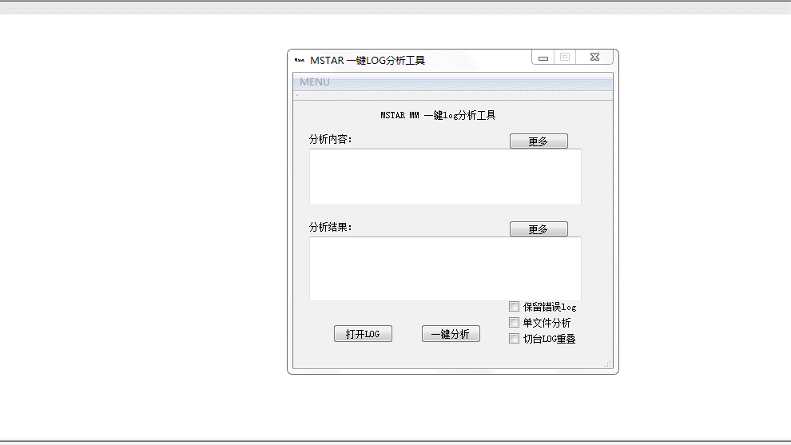
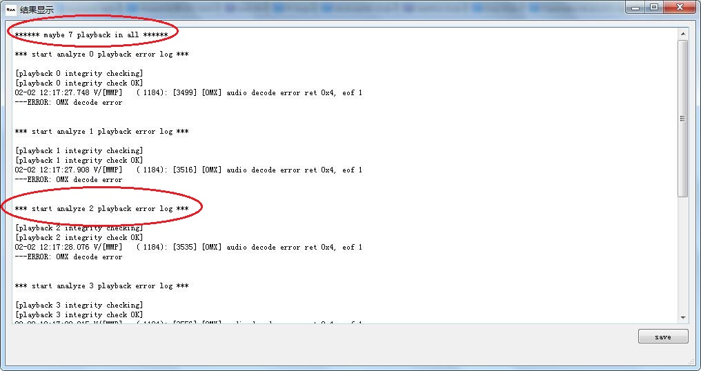
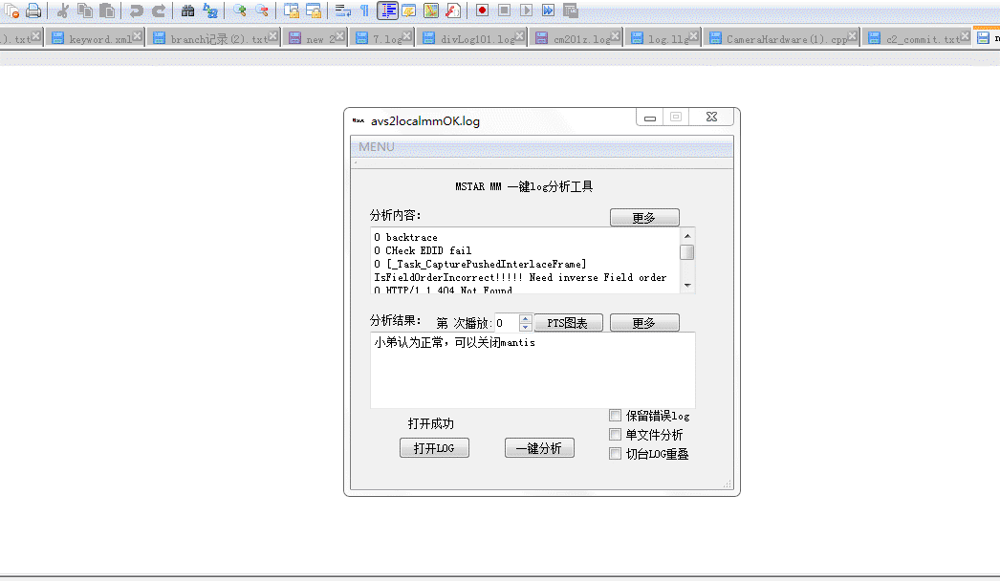
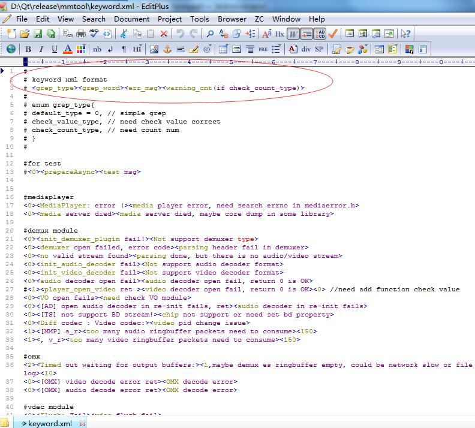
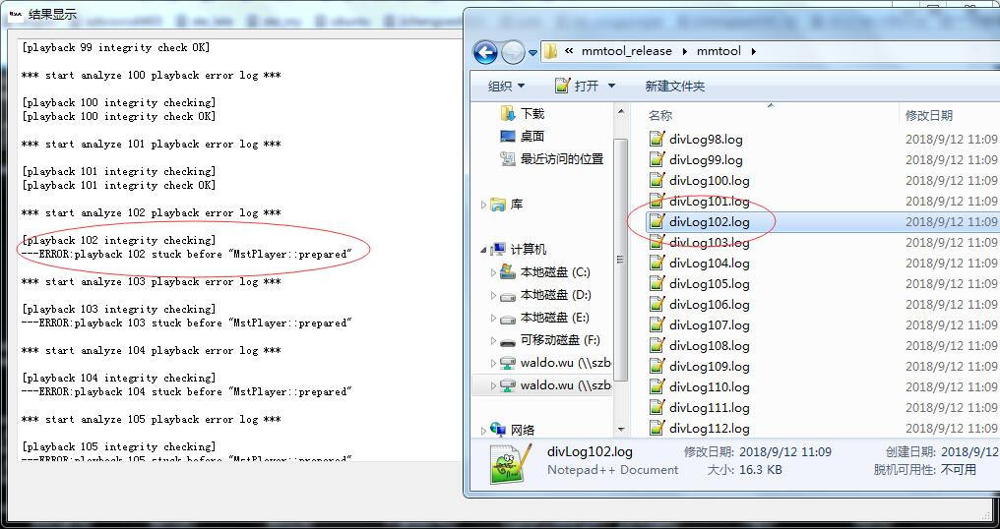

Open log file and auto-analyze with just one button-click
The result will show in this window, which differed all playback log issue
This chart will show pts gap in demux, decoder or display with different WORD, also we can compare these pts in same timestamp
If you want to add new word which can be find in this debug tool, just add YOUR WORD to the file "keyword.xml", then log will be searched after then.
For BAOJI log, mm debug tool can parse all playback log respectively into different files, which we can easily find the problem
FAQ: contact waldo.wu please, thx.